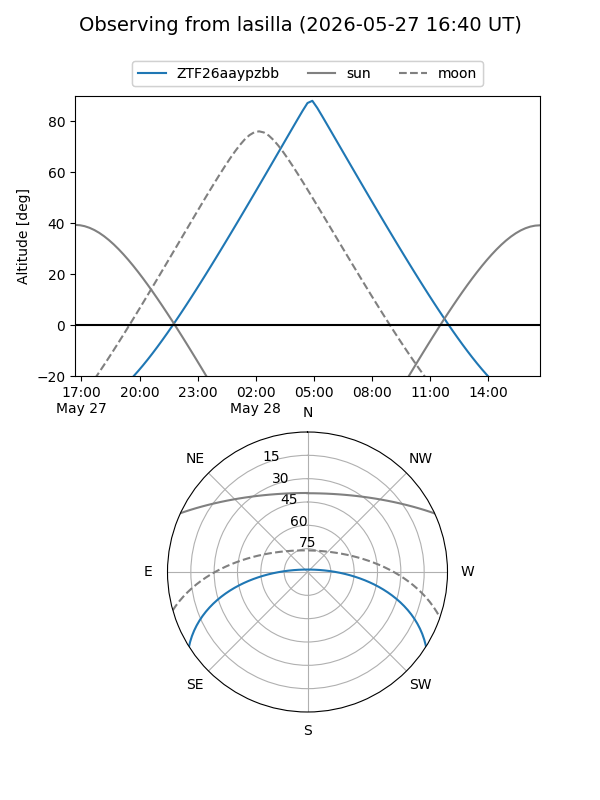
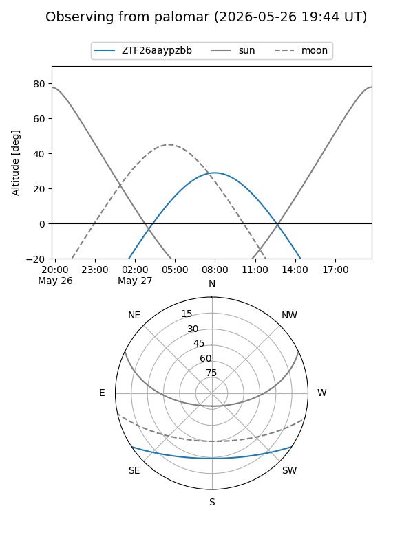

ZTF26aaypzbb
Target ZTF26aaypzbb at 2026-05-27 12:10
Aliases and brokers:
lsst-FINK: link
lsst-Lasair: link
lsst-ALeRCE: link
ztf-FINK: link
ztf-Lasair: link
ztf-ALeRCE: link
alt names
ZTF26aaypzbb (ztf,fink_ztf)
Coordinates:
equatorial (ra, dec) = 247.1691,-27.61753
equatorial (HMS+DMS) = 16:28:40.59,-27:37:03.09
galactic (l, b) = (350.9182,+14.39969)
Flags:
Photometry:
last ztfg=18.18
2 ztfg detections
Lightcurve
Visibility


Additional plots